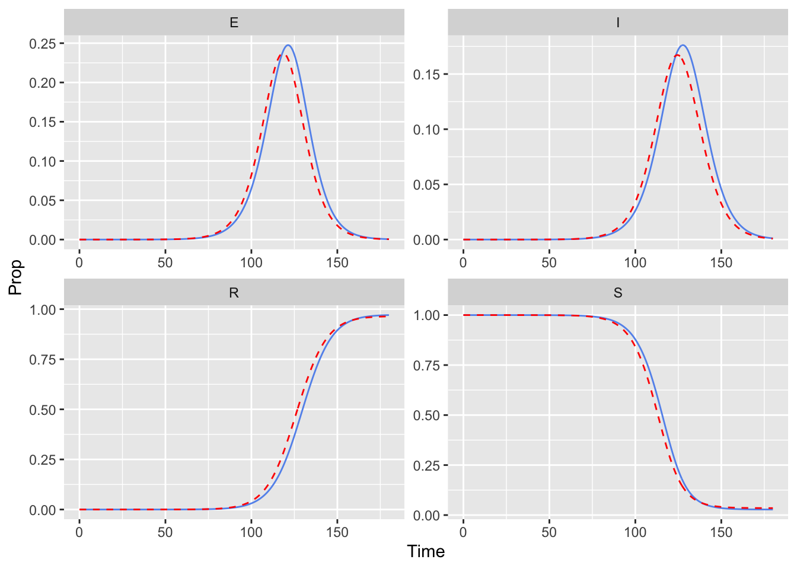

── Attaching core tidyverse packages ──────────────────────── tidyverse 2.0.0 ──
✔ dplyr 1.1.4 ✔ readr 2.1.5
✔ forcats 1.0.0 ✔ stringr 1.5.1
✔ ggplot2 3.5.1 ✔ tibble 3.2.1
✔ lubridate 1.9.4 ✔ tidyr 1.3.1
✔ purrr 1.0.4
── Conflicts ────────────────────────────────────────── tidyverse_conflicts() ──
✖ dplyr::filter() masks stats::filter()
✖ dplyr::lag() masks stats::lag()
ℹ Use the conflicted package (<http://conflicted.r-lib.org/>) to force all conflicts to become errors
library(denim)
Overview
Due to being a discrete-time algorithm, denim output and performance depend on the time step used in the model. This dependency is summarized as followed:
Larger time steps lead to faster run time, but output tends to deviate from the corresponding continuous-time model
Smaller time step yield more “accurate” output but at the cost of slower run time.
This trade-off can be mitigated in 2 ways
Adjust parameters: adjust parameters such that output using larger time step aligns with output from smaller one.
Post-hoc adjustment: adjust the output to better align with smaller time step output.
preprocess_data(baseline, out = out_oldparams, comps = comps) %>%plot_output()

preprocess_data(baseline, out = out_oldparams, comps = comps) %>%compute_accuracy()
[1] 0.01038771
Discussion
It is possible to adjust parameters such that output using timeStep = 0.5 can match output using timeStep = 0.01.
This means that depending on how denim is used, the issue of longer run time due to the need for smaller timeStep may be trivial.
Denim use cases could be categorized into 2 groups:
Model fitting: If the task at hand is to fit the model to a dataset, it is better to use larger timeStep where run time is fast enough, but still small enough for a smooth output + convergence. Just be aware that the fitted parameters may varies slightly depending on the timeStep used.
Simulation: If users need to simulate a model with a set of parameters derived from a continuous time estimates, it is better to use small timeStep (where issue of longer run time persists).
Adjust output
Correlation between error and timeStep
Plotting MAE shows that the divergence in output does linearly correlates with grow in timeStep but only within smaller range of timeStep (typically [0-1]) but gets unpredictable as timeStep becomes larger than that range